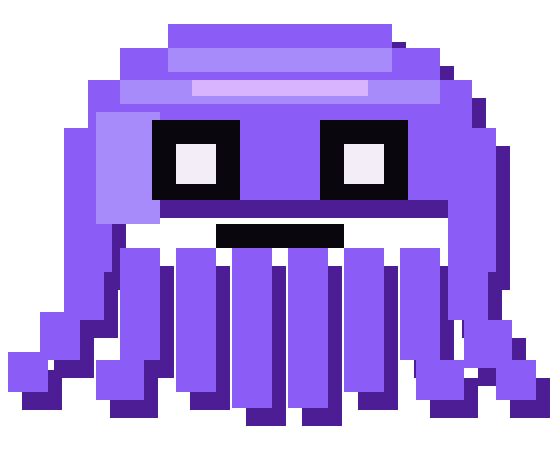

Any model
Start with a computed default. Choose another model only when you actually care.
Local-first model terminal
Chat, code, and agent work without marrying one model. One small binary, computed defaults, and your sessions kept on your machine.

kolkrabbi
01 / START
Install. Run. Add one key when Kolkrabbi asks for it.
curl -fsSL https://kolkrabbi.francomichetti.com/install.sh | bash
kolk
kolk needs an API key before it can use models. kolk key <API_KEY>
kolk
kolk uninstall
Lists every file it will delete, with what each one holds, and asks once.Verified release. The installer accepts only published Kolkrabbi release assets and verifies their checksum before installing.
02 / THE POINT
Start with a computed default. Choose another model only when you actually care.
Sessions, checkpoints, ratings, and cost history stay local and inspectable.
Chat for thinking, code for focused building, agent for longer work with an ordered plan, isolated subagents, and one final synthesis.
03 / OPINIONATED
04 / PROVIDERS
Lit means Kolkrabbi can reach it today. Dimmed means it sits on the provider matrix with no adapter written yet — listed, never promised.
Dimmed is about the direct path — a first-party CLI handover or a native key of your own. Most of those models are already usable through the gateway tile above, which is the one doing the work today.